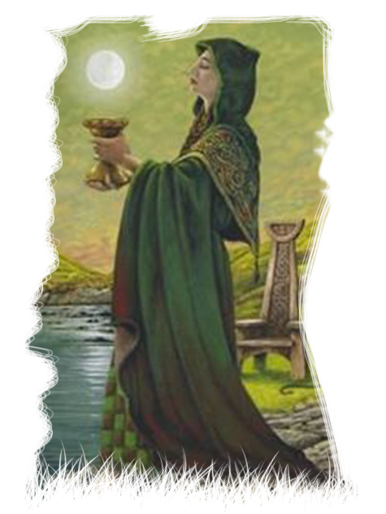

The Bards

In ancient times a Bard was a poet and storyteller who had trained in a Bardic college. In modern times, a Bard is one who sees their creativity as an innate spiritual ability, and who chooses to nurture that ability partly or wholly with Druidism.In ancient times the Bards were the keepers of tradition, of the memory of the tribe - they were the custodians of the sacredness of the Word. Although they probably represented the first level of training for an apprentice Druid, we should not make the mistake of thinking that a Bard was somehow in a lowly or inferior position. There were many levels of accomplishment, but the most skilled of Bards were held in high esteem and partook of many of the functions of both the Ovate and the Druid.
Powers
- SINGER
- STORYTELLER
The
Druids

In ancient times a Druid was a philosopher, teacher, counsellor and magician, the word probably meaning ‘A Forest Sage’ or ‘Strong Seer’. In modern times, a Druid is someone who follows Druidry as their chosen spiritual path, or who has entered the Druid level of training in a Druid Order.
Powers
- PHILOSOPHY
- TEACHING
The Ovates
In ancient times an Ovate was a prophet, seer, healer and diviner. In modern times, an Ovate is one who studies or practices herbalism, healing and divination within a Druidic context, or who has entered the Ovate level of training within a Druid Order.
Powers
- HEALER
- SEER